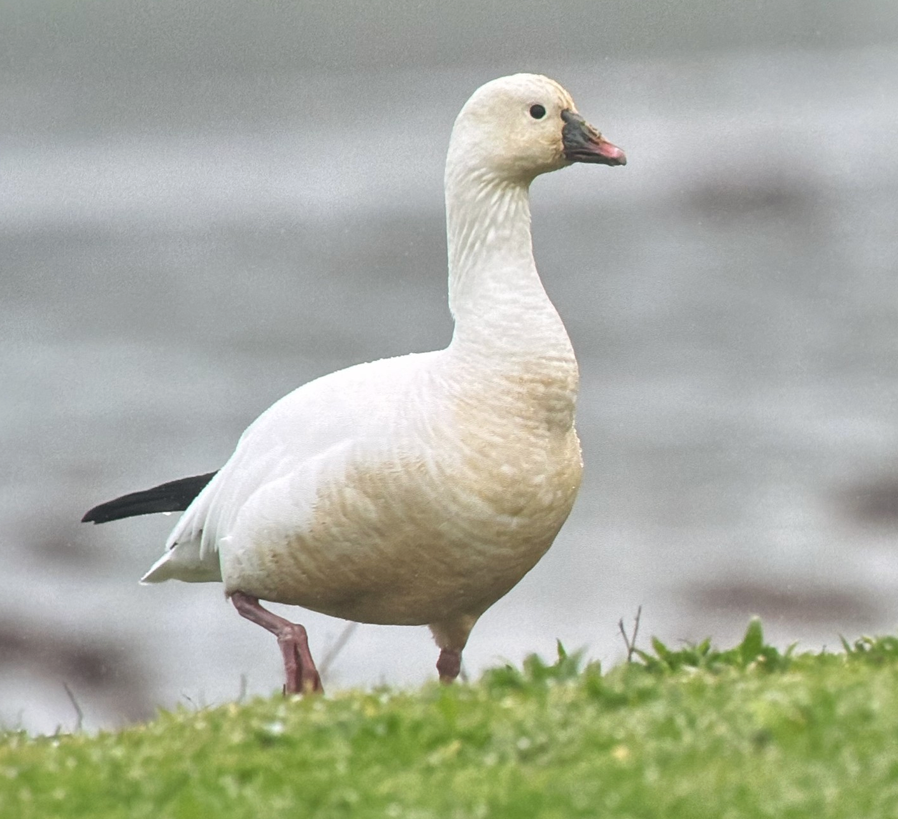
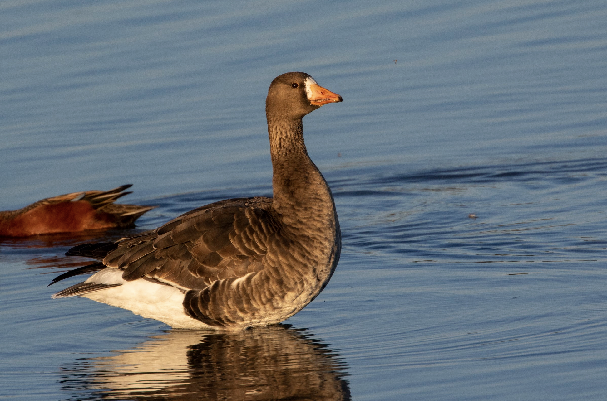
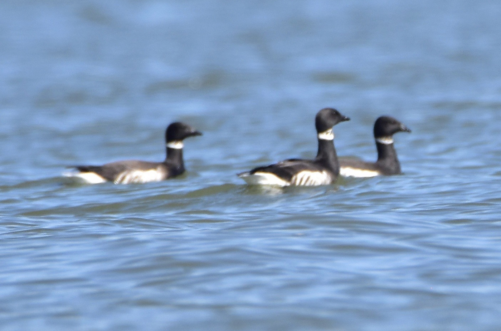

My Goal for this page is to create a short desciption for each species, and where ncesssary, subspecies, of bird that has been sighted in Marin. For resident birds, I will provide a brief desciption of their range, locations to find them, arrival and depature dates, and more. For rarer species, I'll try to share what I know, or have researched, about records.
4 CBRC accepted Records, 2 Rejected.
The Emperor Goose is a very rare winter visitor to Marin. Records fall between 11/27-4/22. Two of the four records are at Limantour Beach (12/13/1928), (12/28/1977-4/22/1978, 3 Birds, photographed Here), with one additional unaccepted but likely real record there as well. The other two come from the cliffs off the Sunset Overlook, OP (2/11-3/9/1991), and one bird that quickly stopped by off Rodeo Beach (11/27/2011).
Uncommon migrant and winter visitor to Marin County. Usually found mixed in flocks of Cackling and Greater White-fronted Geese, or occasionaly in small flocks of their own. High counts include up to 170 birds passing in a single day at Hawk Hill. Snow Geese are very rare on the Outer Point.

Uncommon to Rare migrant and winter visitor to Marin County, just slightly more than annual. Singnificantly less regular than Snow Goose, which it is often found associating with. Records start during the second week of October, and continue through the end of May. One bird summered at Bolinas Lagoon throughout Summer 2013. High Count is 15 birds that wintered along the Plateau near E ranch in 2009.

Fairly common migrant and wintering species in Marin county. Marin county records all refer to pacific subspecies Anser albifrons sponsa, though surrounding counties have records of Tule Goose (Anser albifrons elgasi), which should be looked for. Regular in winter in North-east, North, and coastal parts of the counties. Large flocks can sometimes be seen passing through known migration cooridors. GWFG start arriving the third week of September, and usually leave by the second week of May. Record early and late arrivals are amde complicated by the fact that a few individuals of this species regularly summer in the county. High count is 850 birds in Giacommini Marsh, Point Reyes Station (10/12/2024).

Common wintering species off the Point Reyes Peninsula and in Tomales Bay, Uncommon-rare elsewhere. Uncommon summer lingerer in the Point Reyes region. Majority of birds refer to Black Brant (Branta bernicla nigricans). Recrods of Pale-bellied (Branta bernicla hrota) and Gray-bellied (Branta bernicla hrota x nigricans) exist. Flocks of up to 1500 birds regular in Tomales Bay, with high counts of up to 5000 on Surveys. Old Pale-bellied records likely apply to the Gray-bellied population. 3 Records. Limantour Spit (04/17/1976), Bolinas (03/13/1991), Lawson's Landing (4/03/22), photographed Here Back to home